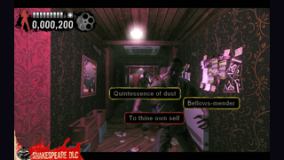
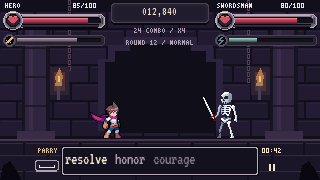
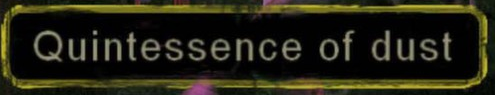
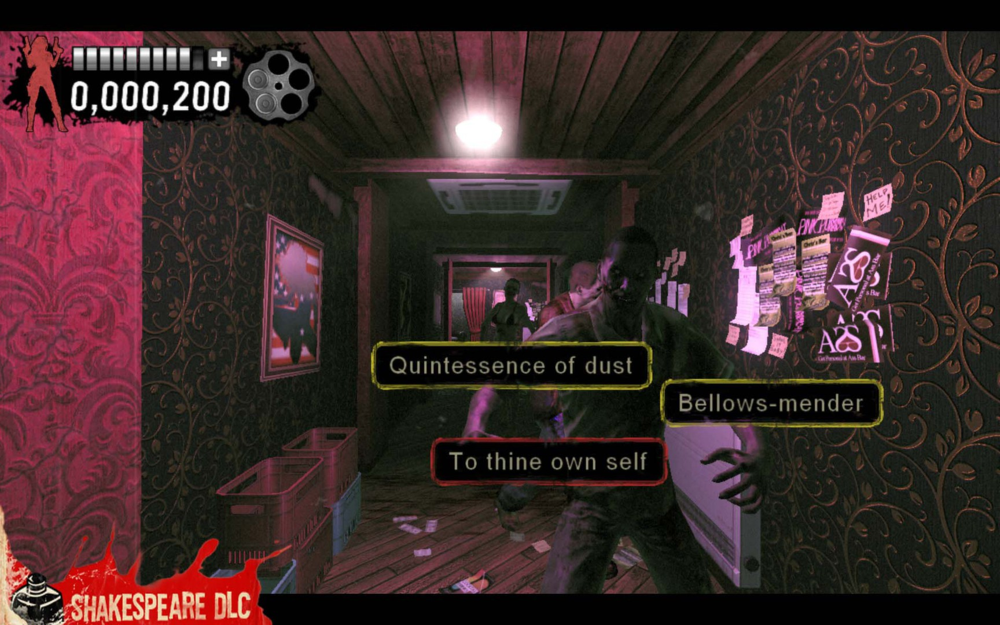

Thường: nền coal, viền rim mảnh1px. Slayer: ba từ trực tiếp trên dải đen dưới, không nền/viền riêng. Hai dải bám đầu/chân actor theo SlayerScreenFX. Giữ geometry chữ và hành vi r4. Đây là preview tĩnh; chưa có asset/gallery tương tác r5.
Nguồn, chọn/loại và mapping · Contract draft · Wireframe · R4 tương tác gốc


Crop nguồn: bảng đen, viền nhẹ, khoảng trống quanh chữ. Không lấy màu vàng hay texture.

Ảnh nguồn đầy đủ · SEGA / Modern Dream · URL gốc
